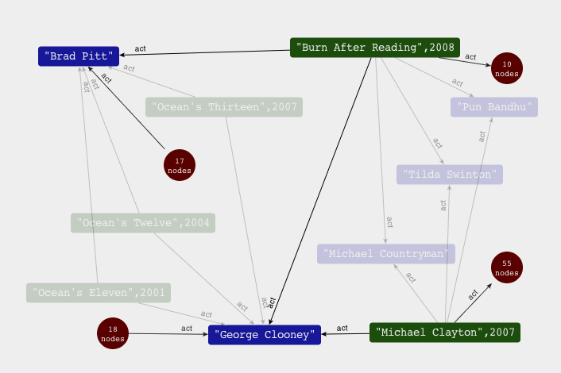

Базы данных: введение, часть десятая
Илья Тетерин
2012-12-03
(use arrow keys or PgUp/PgDown to move slides)
Илья Тетерин
2012-12-03
(use arrow keys or PgUp/PgDown to move slides)
Граф
Хранение графов
Neo4j / Tinkerpop
Теория графов изобретена Леонардом Эйлером ...
в ходе решения задачи о 7 мостах в Кёнигсберге...
и представлена в Петербуржской Академии 26 августа 1735-го года.


Множественный, нагруженный, с поименованными вершинами, с поименованными ребрами, атрибутированные вершины и ребра, направленный и ненаправленный, связанный, хипер-граф, дерево, циклический и ациклический, планарный etc ...
Нагрузка - время в пути, стоимость проезда, расход бензина етс.
Facebook, Twitter, LinkedIn, ВКонтакте, Одноклассники етс етс ...
Социальный граф:
ноды - люди (компании),
ребра - "дружу", "служу", "работаю", "смотрю", "читаю" ...
Алгоритмы - рекомендации:
* А не хочешь ли дружить с Петей, ибо с ним дружит твой друг Вася ...
направлено на рост сети и уточнение характеристик ноды
* Люди твоего семейного положения, возраста и достатка ... любят смотреть рекламу о машинах ...
точная реклама дороже стоит
Twitter: 3.43 / Facebook: 4.74 (source:Six degrees of separation)
Интернет сам по себе - компьютеры, свитчи, таблицы маршрутизации, пользователи ... сайти и линки сайтов
Ноды - компьютеры и раутеры, ребра - сетевые связи между ними.
Алгоритм PageRank и индекс цитирования сайтов
Новые термины: Internet of Things / Web of Things
Интересная презентация: Using A Graph Database To Power The “Web of Things” by Rick Bullotta and Emil Eifrem
Если графы можно хранить в любой базе, зачем термин graph db?
"Официального" определения не существует.
@twarko определяет это как: Граф база - это любое хранилище, реализующее "смежность" без использования индексов (index-free adjacency).
Граф ДБ - можно рассматривать как распределенный индекс, когда в каждом элементе живет свой, маленький, кусочек индекса.
Граф ДБ - это о "локальных" вычислениях. Т.е. когда результат определяется "окрестностями" точки. "Глобальное вычисление" - плохо, нужно будет ходить по всем-всем точкам.
http://neo4j.org/ / wikipedia:Neo4j
Neo4j is a high-performance, NOSQL graph database with all the features of a mature and robust database.
"embedded, disk-based, fully transactional Java persistence engine that stores data structured in graphs rather than in tables"
“For anything with multiple relationships, multiple connections, Neo4j absolutely ROCKS!” Werner Vogels, CTO of Amazon
http://neotechnology.com / Menlo Park, CA 94025 / 19 Malmo, Sweden
Несколько раз получали венчурный капитал, сейчас 25 человек в 5 странах етс ...
Люди:
Emil Eifrém, CEO @emileifrem
Peter Neubauer, VP Product Management @peterneubauer
Marko A. Rodriguez, Advisor http://markorodriguez.com / @twarko
http://neo4j.org/forums/#nabble-td3295750
brew update brew install neo4j neo4j start
pulser-osx:tmp pulser$ neo4j start Starting Neo4j Server...WARNING: not changing user process [8330]... waiting for server to be ready.... OK. pulser-osx:tmp pulser$ open http://localhost:7474/ ==> \,,,/ ==> (o o) ==> -----oOOo-(_)-oOOo----- ==> ==> Available variables: ==> g = neo4jgraph[EmbeddedGraphDatabase [/usr/local/Cellar/neo4j/community-1.5/libexec/data/graph.db]] ==> out = java.io.PrintStream@121f34d0
Open source software products in the graph space.
Blueprints: набор API ( a-la JDBC но для Graph DB :) ) - реализации
Gremlin: язык обхода графов, работает со всеми базами у которых есть blueprints обертка
Rexter: превращаем BluePrints базу в REST server (http://localhost:8182/graphs/tinkergraph/vertices/1)
Pipes: библиотека для конструирования процессов обработки
Furnace: библиотека алгоритмов над графами
Frames: java object - graph bridge (ORM для графов)
gremlin> t = new TinkerGraph('/tmp/tinker');
==> tinkergraph[vertices:0 edges:0 directory:/tmp/tinker]
gremlin> t.addVertex(0)
==> v[0]
gremlin> t.v(0).setProperty("name","mongo")
==>
gremlin> t.v(0).setProperty("age", 5 )
==>
gremlin> t.v(0).map
==> name=mongo
==> age=5
gremlin> t.addVertex(1)
==> v[1]
gremlin> t.v(1).setProperty("name", "pulser" )
==>
gremlin> t.addEdge(0, t.v(1), t.v(0), "uses")
==> e[0][1-uses->0]
gremlin> t.v(1).out
==> v[0]
gremlin> t.v(1).in
gremlin> t.v(1).outE
==> e[0][1-uses->0]

gremlin> t = TinkerGraphFactory.createTinkerGraph() ==> tinkergraph[vertices:6 edges:6]
gremlin> t.V.name
==> lop
==> vadas
==> marko ...
gremlin> t.E
==> e[10][4-created->5]
==> e[7][1-knows->2]
==> e[9][1-created->3] ...
gremlin> v = t.v(1)
==> v[1]
gremlin> v.out
==> v[2]
==> v[3]
==> v[4]
gremlin> v.outE
==> e[7][1-knows->2]
==> e[9][1-created->3]
==> e[8][1-knows->4]
gremlin> v.out.name
==> vadas
==> lop
==> josh
gremlin> v.out('knows').name
==> vadas
==> josh
gremlin> v.out('knows').filter{it.age > 30}.out('created').name
==> ripple
==> lop
thru http://markorodriguez.com
MovieLens Data Sets Aug 2011
HetRec 2011 Data Sets May 2011
==> movies.dat <==
MovieID::Title::Genres
1::Toy Story (1995)::Animation|Children's|Comedy
2::Jumanji (1995)::Adventure|Children's|Fantasy
==> ratings.dat <==
UserID::MovieID::Rating::Timestamp
1::1193::5::978300760
1::661::3::978302109
==> users.dat <==
UserID::Gender::Age::Occupation::Zip-code
1::F::1::10::48067
2::M::56::16::70072
wc -l *.dat
3883 movies.dat
1000209 ratings.dat
6040 users.dat
1010132 total
Разделитель ::
imdb данные - hetrec2011-movielens-2k.zip pulser$ wc -l *.dat 231743 movie_actors.dat 10198 movie_countries.dat 10156 movie_directors.dat 20810 movie_genres.dat 49168 movie_locations.dat 51796 movie_tags.dat 10198 movies.dat 13223 tags.dat 855599 user_ratedmovies-timestamps.dat 855599 user_ratedmovies.dat 47958 user_taggedmovies-timestamps.dat 47958 user_taggedmovies.dat 2204406 total
head -n 5 movies.dat | awk 'BEGIN{FS="[\t]"} {print $1,$2,$3;}' id title imdbID 1 Toy story 0114709 2 Jumanji 0113497 3 Grumpy Old Men 0107050
head -n 5 movie_actors.dat movieID actorID actorName ranking 1 annie_potts Annie Potts 10 1 bill_farmer Bill Farmer 20 1 don_rickles Don Rickles 3
Загрузим актеров в neo4j и посмотрим что получится...
Создаем новую базу neo4j
Парсим входные файлы
"Гуляем" по данным
Надо еще подготовить уникальный список актеров:
iconv -f ISO-8859-1 -t utf8 movie_actors.dat
| awk ' BEGIN{FS="[\t]";OFS="\t"} { print $2,$3; }'
| sort
| uniq > mine_actors.dat
head mine_actors.dat
1000057-don_adams Don Adams
10000635-joel_michaely Joel Michaely
10000643-john_hensley John Hensley
NB: neo4j не дает назначить id вершинам, так что нужен "маппинг" из id файлов в ноды...
создаем проект в IDEA прописываем библиотеки из /usr/local/Cellar/neo4j/community-1.8-unix/libexec/lib/ geronimo-jta_1.1_spec-1.1.1.jar lucene-core-3.5.0.jar neo4j-cypher-1.8.jar neo4j-graph-algo-1.8.jar neo4j-graph-matching-1.8.jar neo4j-jmx-1.8.jar neo4j-kernel-1.8.jar neo4j-lucene-index-1.8.jar neo4j-shell-1.8.jar neo4j-udc-1.8.jar org.apache.servicemix.bundles.jline-0.9.94_1.jar scala-library-2.9.1-1.jar server-api-1.8.jar
public class Loader3 extends TestCase {
public static final Pattern TAB_SPLITTER = Pattern.compile("\t");
public static final String PATH = "/Users/pulser/mine/neo/";
EmbeddedGraphDatabase graphDb = null;
Transaction transaction = null;
public void setUp() throws Exception {
super.setUp();
if (graphDb == null) {
graphDb = new EmbeddedGraphDatabase("/Users/pulser/neo4j/imdb/graph.db");
transaction = graphDb.beginTx();
} }
protected void tearDown() throws Exception {
transaction.success();
transaction.finish();
graphDb.shutdown();
super.tearDown(); }
private <K> List<K> loadFile(final String name, final Fu<String[], K> reader) throws IOException {
final List<K> out = Cf.newList();
final BufferedReader in = new BufferedReader(new FileReader(PATH + name));
String line = in.readLine(); // skip first line
while ((line = in.readLine()) != null) {
out.add(reader.apply(TAB_SPLITTER.split(line)));
}
return out; }
static class MovieActor {
public final String movieID;
public final String actorID;
public final String actorName;
public final int ranking;
MovieActor(final String[] items) {
this.movieID = items[0];
this.actorID = items[1];
this.actorName = items[2];
this.ranking = items[3] != null ? Integer.valueOf(items[3]) : -1;
}
public static Fu<String[], MovieActor> getReader() {
return new Fu<String[], MovieActor>() {
public MovieActor apply(final String[] arg) {
return new MovieActor(arg);
}
};
} }
static class Movie { ... }
public void testLoadActors2012() throws Exception {
System.out.println("out = " +
loadFile("mine_movie_actor.dat", MovieActor.getReader()).size());
System.out.println("out = " +
loadFile("mine_movies.dat", Movie.getReader()).size()); }
public void testLoadMoviesToNeo() throws Exception {
log.info("Clear old data ... ");
for (final Node node : graphDb.getAllNodes()) {
for (final Relationship item : node.getRelationships()) {
item.delete();
}
node.delete();
}
log.info("Load movies ...");
final List<Movie> movies = loadFile("mine_movies.dat", Movie.getReader());
final Map<String, Integer> uniqMovie = new HashMap<String, Integer>();
for (final Movie movie : movies) {
final String key = movie.title + "#" + movie.year;
if (uniqMovie.containsKey(key)) {
continue;
}
uniqMovie.put(key, movie.id);
}
final Map<Integer, Integer> movieIdToUniqMovieId = new HashMap<Integer, Integer>();
for (final Movie movie : movies) {
final String key = movie.title + "#" + movie.year;
final Integer uniq = uniqMovie.get(key);
movieIdToUniqMovieId.put(movie.id, uniq);
}
final Map<Integer, Node> movieToNodeMapping = new HashMap<Integer, Node>();
log.info("Create nodes for movies ...");
for (final Movie movie : movies) {
if (movie.id != movieIdToUniqMovieId.get(movie.id))
continue;
final Node v = graphDb.createNode();
v.setProperty("type", "movie");
v.setProperty("title", movie.title);
v.setProperty("src-id", movie.id);
v.setProperty("imdbId", movie.imdbId);
v.setProperty("year", movie.year);
movieToNodeMapping.put(movie.id, v); }
log.info("Load actors ...");
final List<MovieActor> actors = loadFile("mine_movie_actor.dat", MovieActor.getReader());
final Map<String, String> uniqActors = new HashMap<String, String>();
for (final MovieActor actor : actors)
uniqActors.put(actor.actorID, actor.actorName);
log.info("Create nodes for actors ...");
final Map<String, Node> actorMapping = new HashMap<String, Node>();
for (final Map.Entry<String, String> actor : uniqActors.entrySet()) {
final Node node = graphDb.createNode();
node.setProperty("type", "actor");
node.setProperty("name", actor.getValue());
node.setProperty("actor-id", actor.getKey());
actorMapping.put(actor.getKey(), node); }
log.info("Create relations ...");
final Set<String> alreadyRegistered = new HashSet<String>();
for (final MovieActor actor : actors) {
final Integer mid = Integer.valueOf(actor.movieID);
final Integer uniqMovieId = movieIdToUniqMovieId.get(mid);
final String ukey = actor.actorID + "#" + uniqMovieId;
if (alreadyRegistered.contains(ukey)) {
continue;
}
final Node nodeMovie = movieToNodeMapping.get(uniqMovieId);
final Node nodeActor = actorMapping.get(actor.actorID);
if (nodeMovie == null || nodeActor == null) {
System.out.println("actor = " + actor);
throw new IllegalStateException();
}
final Relationship edge = nodeMovie.createRelationshipTo(nodeActor, RelTypes.act);
edge.setProperty("rank", actor.ranking);
alreadyRegistered.add(ukey);
}
log.info("Done.");
}
Мы, при помощи теста, построили новую graph.db с данными о фильмах.
Остановим сервер neo4j stop
Подсунем новую базу серверу ...
Я не нашел, как ему из коммандной строки подсунуть "другую" базу ...
Запустим сервер и пойдем в браузер ...
pulser$ cd /Users/pulser/neo4j/imdb pulser$ neo4j stop pulser$ cp -r graph.db /usr/local/Cellar/neo4j/community-1.8-unix/libexec/data/ pulser$ neoj4 start ... Go to http://localhost:7474/webadmin/ ...
Откроем Console и там Gremlin ...
gremlin> c = g.v(164077)
==> v[164077]
gremlin> c.name
==> George Clooney
gremlin> c.in.out.filter({it.name == 'Brad Pitt'}).unique()
==> v[139564]
gremlin> c.in.out.filter({it.name == 'Brad Pitt'}).back(2).title
==> Ocean's Twelve
==> Ocean's Thirteen
==> Burn After Reading
==> Ocean's Eleven
Откроем Data Browser...
Сделаем запрос на Cypher ...
START a = node(*) where a.type = 'actor' and ( a.name = 'George Clooney' or a.name = 'Brad Pitt' ) RETURN a // and return it. // Hit CTRL+ENTER to execute
А потом посмотрим немножко на это в графическом виде ...

Открытый теоретический вопрос
- как партиционировать графы
- как раскладывать их по нодам.
Ответ лежит где-то в районе "minimum cut" (wiki:Cut (graph_theory))
... но разрез можно посчитать для статичного графа, а что делать с динамичным?
Ответ от neo4j - вы удивитесь, сколько нод и ребер можно "спрятать" внутри одной машины ...
pdf - 2010 год, map-reduce подобные вычисления на графах.
На каждой ноде выполняется один и тот же код.
Вход - это сообщения от всех нод к этой ноде с предыдущего шага.
Выход - набор сообщений для нод на следующем шаге.
На каждом шаге нода может сказать "ready", т.е. "хватит считать"
Расчет закончен, когда все ноды закончили расчет.
https://github.com/tinkerpop - документация по Tinkerpop продуктам
http://neo4j.org/learn/ - документация и туториалы по Neo4j
Writings и Lectures by Marko Rodriguez
Интернет университет: Введение в теорию графов
Твиттер по hash-tag #neo4j
InfoQ.com по neo4j
DZone NoSQL microzone
Теория графов вышла из "математическая" абстракция в нашу жизнь.
Вычисления в графах ориентированы на "локальность".
Специальный базы созданы и доступны для работы с графами.
В свободном доступе есть массивы данных для игры с алгоритмами.
Создать программу для работы с Neo4j можно за несколько часов.